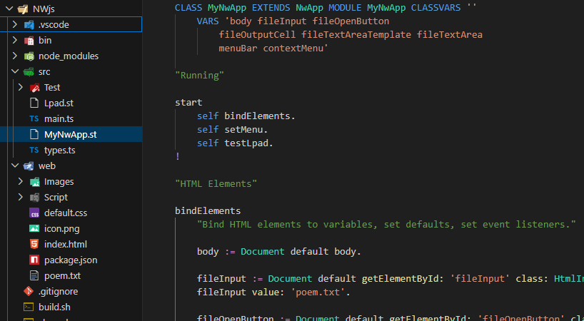

Now back to the file
src/MyNwApp.st. in VSCode,
that looks like this when expanding the
./web folder:

First notice that the app is structed like a regular web client app.
The desktop GUI will be composed from the files in the
/web folder,
by a Chromium browser engine packaged within NW.js.
(But different from Electron, there is only
one JavaScript engine running
that makes the app use less memory and development much easier)
The app class
MyNwApp inherits from
NwApp
that gives you some desktop app functionality.
The method
bindElements works exacly the same as in other web apps.